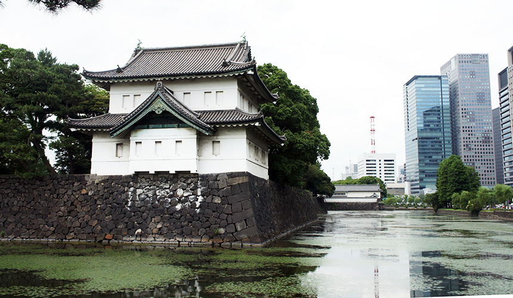

日本
日本景點
皇居
天皇的官邸所在,是日本的政治中心。皇居內部不對外開放,但可以參觀周圍的皇居東御苑。
淺草寺

東京最古老的寺廟之一,以其巨大的雷門"仁王門"聞名。還有淺草觀音等景點。
東京鐵塔
東京地標性建築,高度333米,可登頂眺望東京全景。
明治神宮
以明治天皇和皇后為祭祀對象的神社,是東京最大的神社。
增上寺
江戶時代最著名的淨土宗寺院之一,建築及庭園優雅典雅。
皇居外苑
包括皇居西側的一片綠地,是東京的重要公園。春天賞櫻很有名。
秋葉原
著名的電子產品和動漫文化街區,吸引眾多年輕人和遊客前往。
涉谷
著名的電子產品和動漫文化街區,吸引眾多年輕人和遊客前往。
上野公園
東京最流行的時尚及娛樂中心,標誌性建築包括澀谷109等。
富士山

日本最高的山峰,海拔3,776公尺。這座優美的活火山以其獨特的圓錐形山峰聞名於世,是日本三大名山之一
金閣寺
建於1397年的禪宗寺院,以其金色的佛堂聞名於世。
清水寺
建於1397年的禪宗寺院,以其金色的佛堂聞名於世。
二條城
是日本最著名的城堡之一,保存完好的天守閣和精美的城牆令人嘆為觀止。
嵐山
京都西部的一處風景區,以竹林散步、渡月橋、天龍寺等景點聞名。
鴨川
流經京都市中心的河川,是賞楓和賞櫻的熱門地點。
祇園

京都的傳統藝術和娛樂中心,以其特色的建築和藝妓文化聞名。
東福寺
擁有雄偉的塔門和美麗的枯山水庭園,是日本五山之首的禪宗寺院。
銀閣寺
又名慈照寺,以其優雅的禪意建築和庭園聞名。
平安神宮
為紀念平安遷都而建,是日本最大的神社之一。
伏見稻荷大社
有成千上萬座朱紅色鳥居貫穿的神社,是日本最大的稻荷神社。
大阪城
日本最具代表性的城堡之一,其雄偉的天守閣和建築群令人印象深刻。
通天閣

大阪地標性建築,高108米的觀景台可俯瞰大阪全景。
道頓堀

大阪的娛樂中心,以其五顏六色的霓虹燈招牌和道頓堀川聞名。
天保山
臨海的娛樂區,擁有摩天輪、水族館等景點。
梅田
大阪的主要商業和購物中心,有眾多百貨公司和餐飲選擇。
心齋橋
大阪最著名的購物街之一,琳瑯滿目的商店讓遊客流連忘返。
阿倍野 Harukas
大阪最高的摩天大樓,頂層有觀景台可俯瞰大阪全貌。
十三
大阪的夜生活中心,有眾多的酒吧、餐廳和娛樂場所。
生國魂神社

大阪最古老的神社之一,供奉大阪城創建者豐臣秀吉。
天王寺公園
坐擁通天閣等標誌性建築的大型公園,是賞櫻和賞楓的好去處。
支芴湖
位於千歲市,是北海道最大的湖泊,擁有優美的湖光山色。
羅臼町
位於北海道東部的海濱小鎮,是賞鯨和觀賞流冰的絕佳地點。
層雲峽
位於上川町,擁有雄偉的峽谷景觀和瀑布,夏季非常涼爽。
洞爺湖
位於伊達市,是北海道最大的湖泊之一,是知名的溫泉勝地。
小樽運河

位於小樽市,保留著昔日港口的風情,是北海道著名的觀光勝地。
登別溫泉

位於登別市,以其硫磺泉聞名,是北海道著名的溫泉勝地。
富良野
位於富良野市,是北海道著名的鮮花與薰衣草之鄉。
阿寒湖
位於釧路市,是一處風光明媚的湖泊,擁有豐富的自然生態。
摩周湖
位於弟子屈町,是北海道最深的湖泊,以其碧綠清澈的湖水聞名。
知床半島
位於斜里町,是一處原始的自然保護區,是賞鯨和觀賞野生動物的理想場所。
首里城
琉球王國時代的皇宮遺址,以其獨特的紅瓦建築著稱。
美國村
位於那霸市,是沖繩最熱鬧的商業和娛樂中心。
海洋博公園
位於名護市,是一處集海洋主題公園、水族館和休閒度假於一體的大型景區。